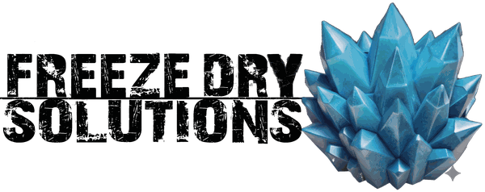

Case Study
Freeze-drying equipment and co-manufacturing, Fortunata LLC. A hard five-day deadline, two distinct buyer paths on one page, and zero room to miss the launch date.
Industry
Food Manufacturing
Scope
Landing Page
Timeline
5 Days
Status
Live Before Trade Show

Tracee McAfee, Co-Founder/CEO
The Client
Tracee McAfee wasn't redesigning an existing business, she was launching an entirely new one. Freeze Dry Solutions would extend Cryo Cure's expertise beyond cannabis into food, pet food, nutraceutical, and pharma freeze-drying. With a trade show days away, she needed a professional landing page live before she boarded her flight. The date wasn't flexible.
The Problem
The page had to serve two completely different audiences at once: buyers looking to purchase a commercial freeze dryer outright, and buyers who wanted to outsource the freeze-drying process entirely. Get that wrong and one path reads as the "real" offer while the other gets ignored.
The brand carried its own risk too. A "no white on blue" instruction could easily have pushed the palette off her actual brand or hurt readability for buyers seeing the page for the first time at a trade show. And the imagery had to be exact: food, nutraceutical, and pharma buyers know the difference between freeze-dried and simply dehydrated product, and getting that wrong would have undercut credibility with the audience the page needed to convince most.
The Strategy
A discovery call on Wednesday led to a working preview within 24 hours, followed by focused rounds of revision rather than one big reveal.
The first color pass didn't land: an initial charcoal and steel-blue palette missed her brand's tone entirely. It was rebuilt around a lighter, frosty-blue palette matched to her existing brand and verified for accessibility contrast.
The bigger fix was the imagery. Early stock photos of freeze-dried food read as simply dehydrated: plump and glossy, not the real texture. To an experienced buyer, imagery like that signals a company that doesn't actually understand the industry it's selling into. Multiple rounds of sourcing, checked against real reference photos, produced fruit that actually looked freeze-dried: collapsed, cratered, matte.
The equipment itself got the same treatment. Rather than generating images that could misrepresent a product she resells, the page used real cutaway and interior shots from the manufacturer's own footage, with her permission, giving buyers an accurate sense of scale and build.
Both buyer paths were built with equal visual weight, matching hierarchy and CTA prominence, with two separate lead forms so equipment and co-manufacturing inquiries stay cleanly segmented from the start.
The Results
The landing page launched before the trade show, giving Freeze Dry Solutions a professional online presence before meeting customers for the first time. Both inquiry paths were tested end-to-end, and the project was delivered on schedule, with a second phase already discussed for the future.
< 1 Week
From cold outreach to a fully live, working site.
2 Paths
Equipment purchase and outsourced manufacturing, each with its own dedicated lead form, tested end-to-end.
Live before departure
Launched ahead of her trade show deadline, with a second phase already scoped.